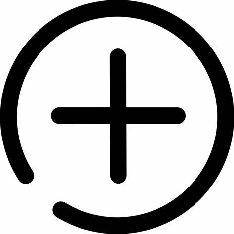

Location Alignment
In the Hive Metastore, Database definitions, Table Schemas, and Partition details include the location of their datasets. These locations contain a full URI to the dataset. Migrating from one cluster to another requires us to make adjustments to these locations.
The most simple translation will change the namespace of the URI so everything is RELATIVE. This helps reduce the impact of other tools that might be using these datasets outside the Hive Metastore definitions.
Using the RELATIVE 'Location Translation Strategy' is suggested for side-car cluster migrations where you want to keep everything the same as much as possible.
When you are reorganizing, consolidating, or changing storage environments then the ALIGNED 'Location Translation Strategy' will aid in that process. We suggest building out Warehouse Plans for each database for maximum control of that movement.
Attributes of location transformations:
Global Warehouse Directories
Environment Warehouse Directories
Target Namespace
Warehouse Plans
Order of Evaluation
Order of Evaluation means that we will evaluate the attribute in the describe order and once a valid mapping is found, we will stop the evaluation. Evaluation order depends on the translation type as well.
Target Namespace
Warehouse Plans (when defined)
Global Warehouse Directories
Environment Warehouse Directories (under certain conditions)
Target Namespace
Translation Types
Translation types are used to determine how the location should be transformed. The following are the translation types are ALIGNED and RELATIVE.
Legend
Icon | Description |
|---|---|
Valid | |
Invalid | |
Ignored | |
SQL | |
Distcp | |
Manual | |
Automatic | |
 | Optional |
Metastore Direct | |
Global Warehouse | |
Warehouse Plan |
Translation Scenarios
Translation Type | Data Movement | Required | Notes | |||
|---|---|---|---|---|---|---|
DUMP | RELATIVE | |||||
ALIGNED | ||||||
SCHEMA_ONLY | RELATIVE |
| Using distcp here when either table or partition locations aren't standard, will result in data loss because we're not inspecting all the locations through the Metastore Direct connection. It's recommended to use `ALIGNED` with `distcp` to build an accurate `distcp` plan. | |||
ALIGNED | when Warehouse Plan(s) used | |||||
SQL | RELATIVE | |||||
ALIGNED |
| |||||
EXPORT_IMPORT | RELATIVE | |||||
ALIGNED |
| |||||
HYBRID | RELATIVE | |||||
ALIGNED |
| |||||
STORAGE_MIGRATION | RELATIVE | |||||
ALIGNED |
| when Warehouse Plan(s) used | ||||
LINKED | RELATIVE | |||||
ALIGNED | ||||||
COMMON | RELATIVE | |||||
ALIGNED | ||||||